Puente Alto · Av. Gabriela Oriente 1698
Después de la pega, todavía atendemos.
Cendovet, de lunes a sábado hasta las 20:00, con 249 reseñas y un 4,5.
- 249reseñas en Google
- 4,5de promedio
- 20:00cierra de lunes a sábado
- 0webs: su ficha aún dice «agregar sitio»
Hasta las ocho
A qué hora llegar con tu mascota
- EN LA MAÑANA
Desde las 11:00
No abre temprano: mejor llamar antes.
- A LA HORA DE COLACIÓN
Cerrado de 14 a 15
Una hora que conviene saber.
- DESPUÉS DE LA PEGA
Hasta las 20:00
Para llegar con luz de tarde.
- EL SÁBADO
El mismo horario
El domingo, cerrado.
La consulta cabe en la tarde.
En la clínica
Qué se atiende
-
En sus reseñas
Consulta
«Explican todo muy bien».
-
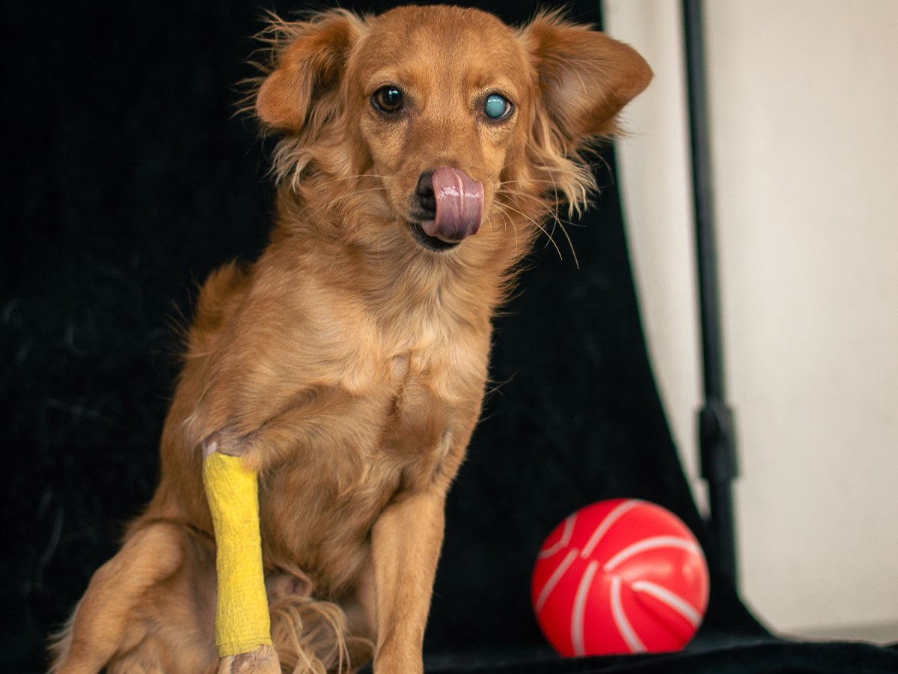
En sus reseñas
Tratamientos
Inyecciones y controles.
-
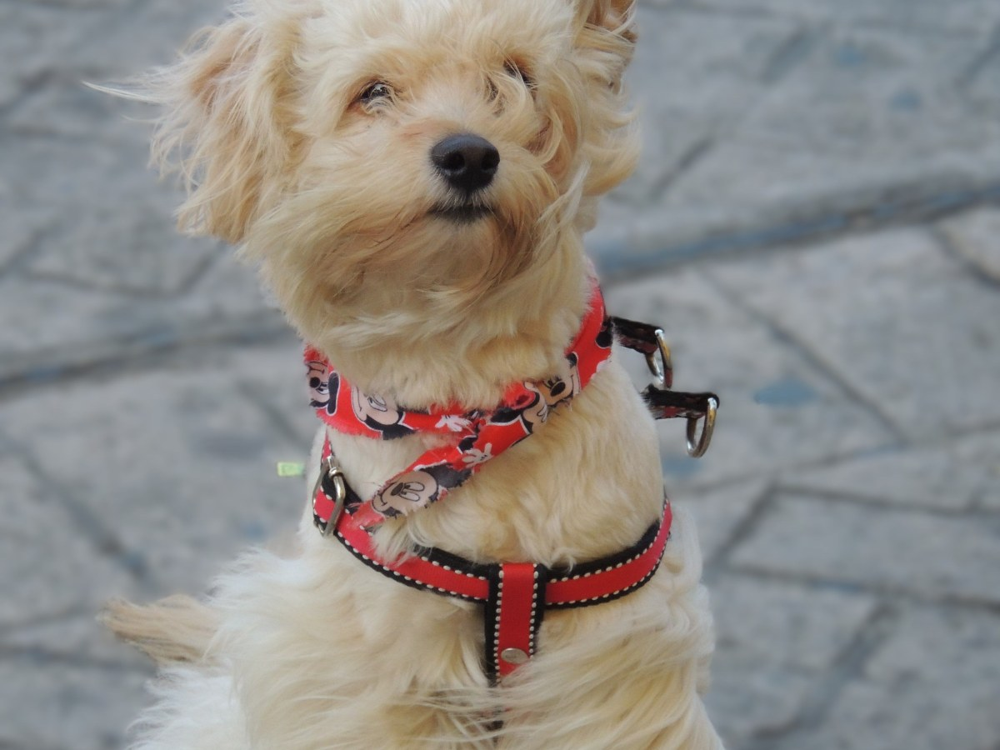
Por confirmar
Vacunas
Se consulta por teléfono.
-
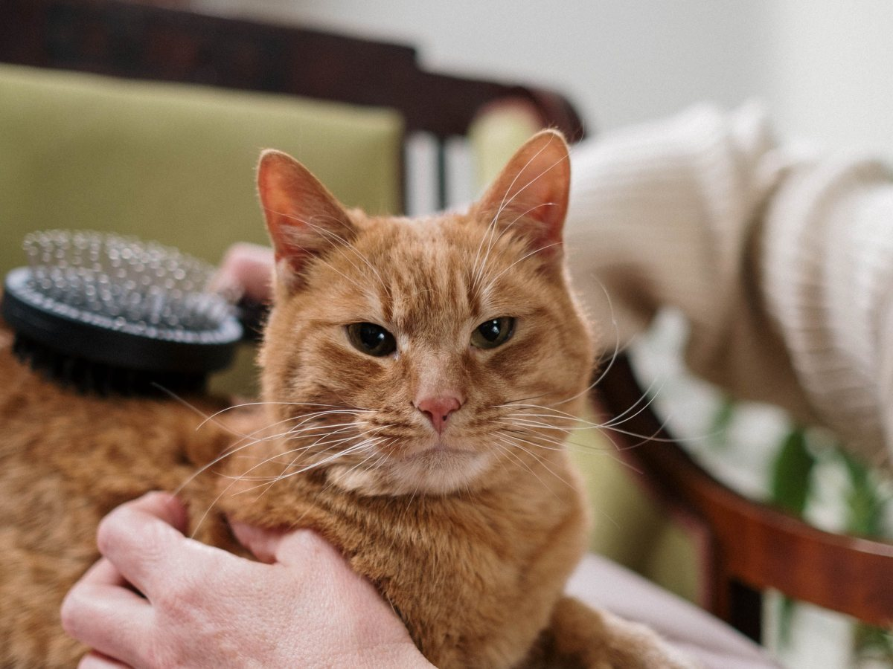
Por confirmar
Gatos
Se consulta por teléfono.
-
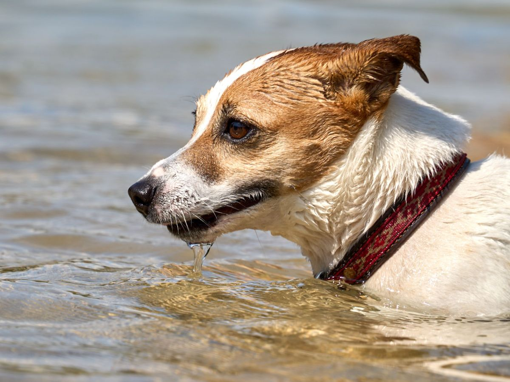
Por confirmar
Baño
Pregunta si lo hacen.
-
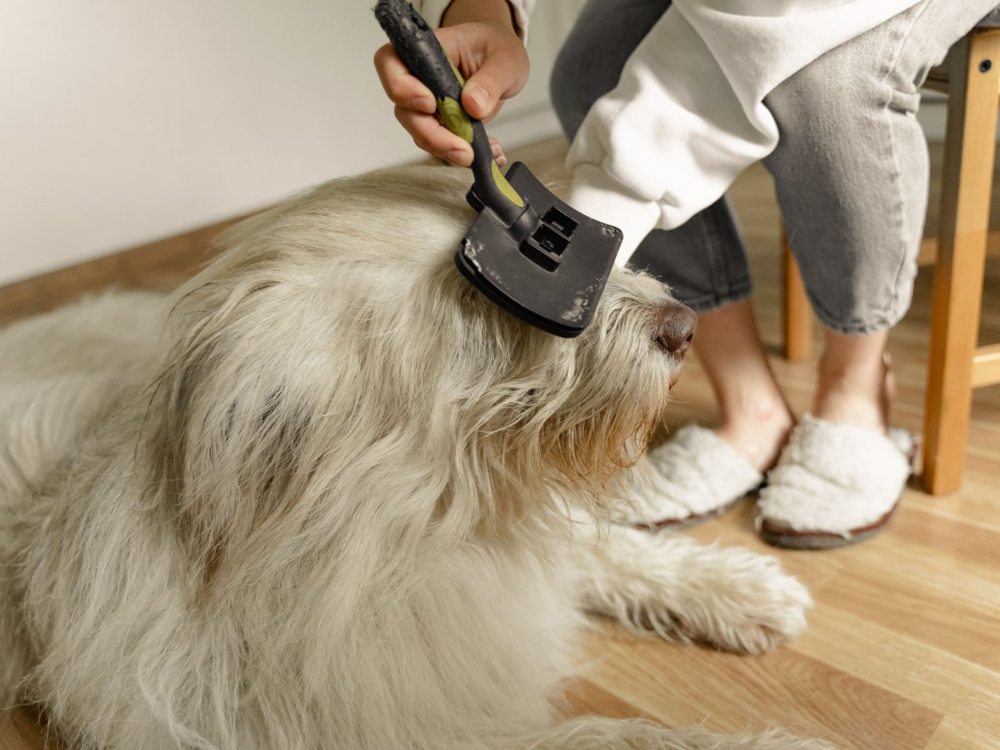
Por confirmar
Uñas y oídos
Pregunta si lo hacen.
Lo verificado sale de sus reseñas; el resto se confirma con la clínica.
«Muy buenos doctores veterinarios, atienden muy bien a las mascotas».
Una reseña de Google
Los de siempre
Pacientes de la tarde
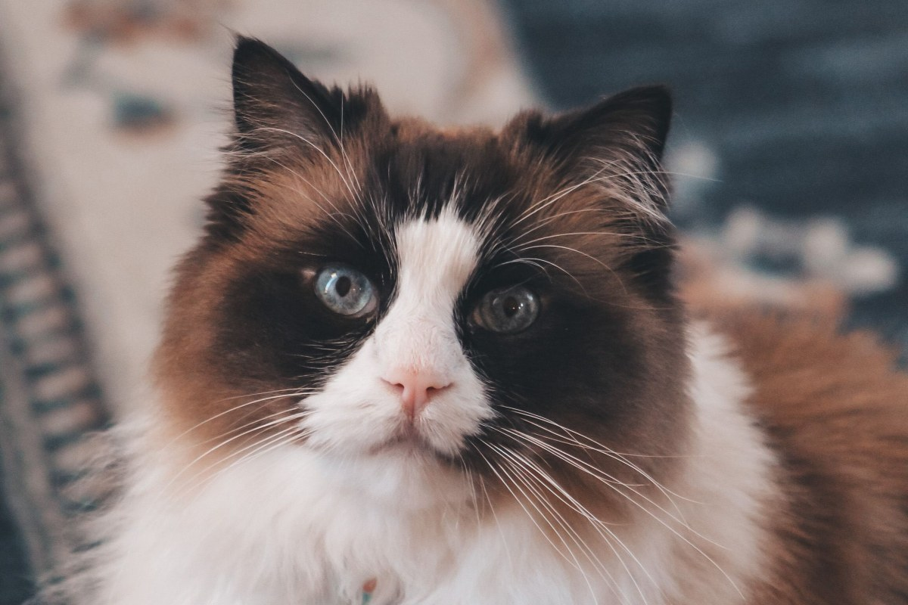
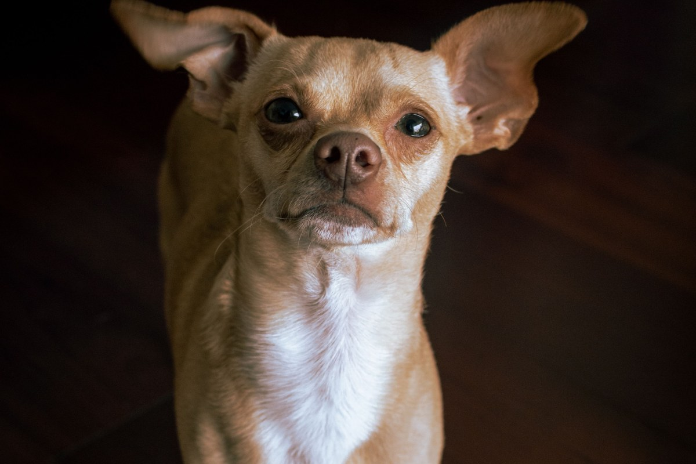
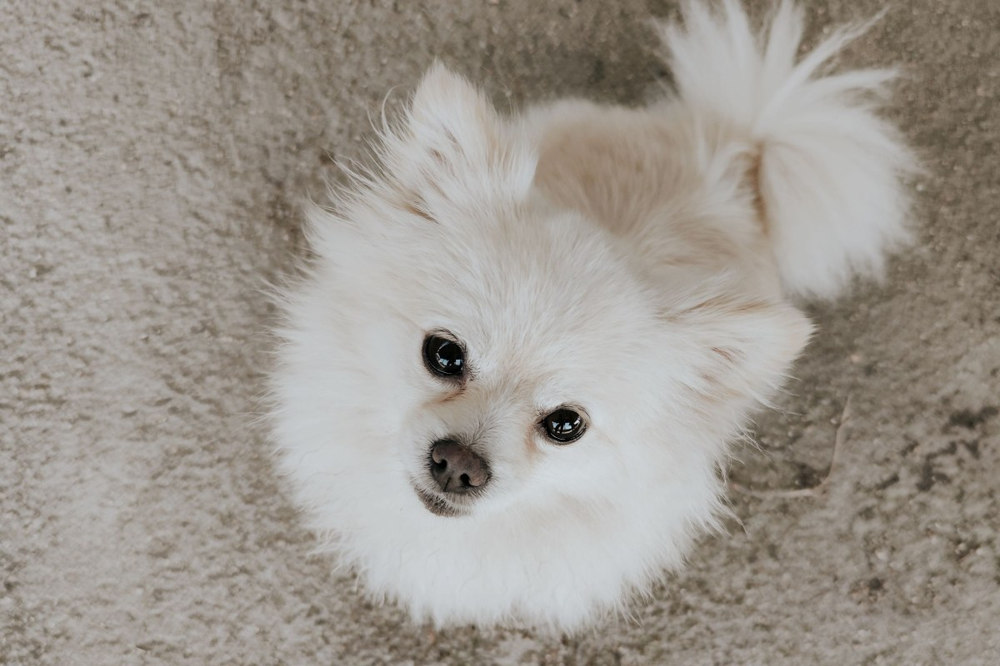
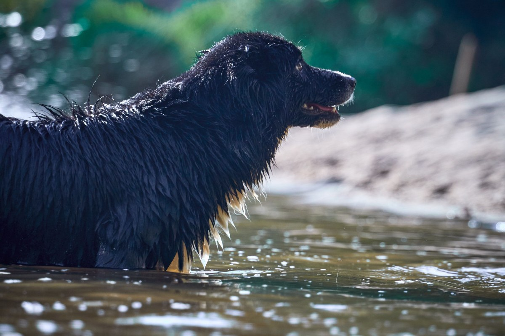
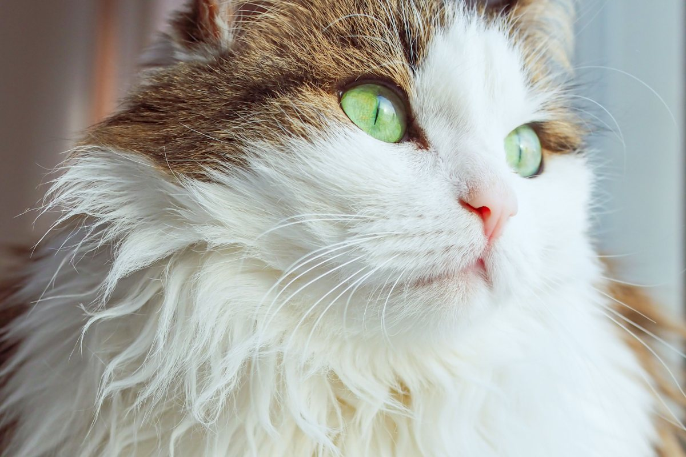
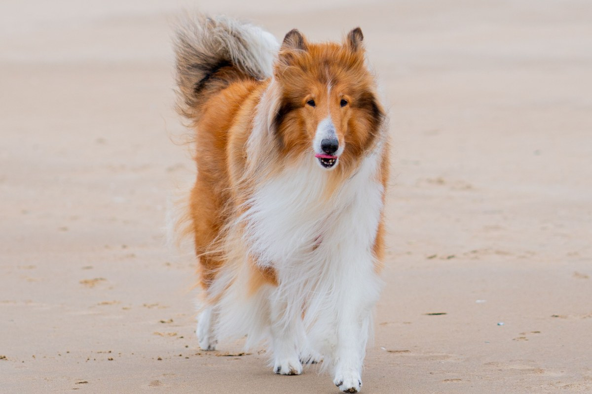
Fotos de referencia: ninguna es de la clínica.
Dónde estamos
Av. Gabriela Oriente 1698, Puente Alto
- Teléfono
- (2) 2742 8545
- Lun a sáb
- 11:00–14:00 y 15:00–20:00
- Domingo
- Cerrado
Es un teléfono fijo: se llama en horario, no recibe WhatsApp.
Gabriela Oriente 1698 Abrir en Google Maps
Para la clínica
Qué es real y qué falta
Lo verificado
Dirección, teléfono, el horario completo con la colación y las reseñas.
Lo de ejemplo
Los servicios por confirmar, las fotos y los textos de las tarjetas.
Lo que falta
La lista real de servicios, un WhatsApp y la web: su ficha dice «agregar sitio web».